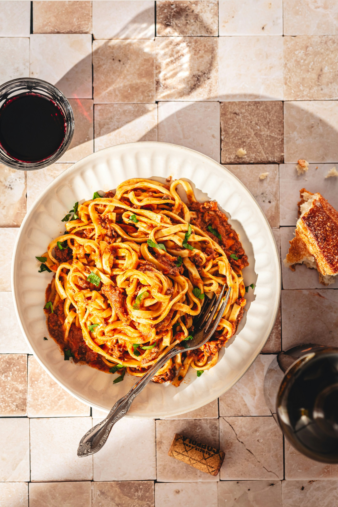

Fettuccine Arrabbiata

Photo by Natalie Behn on Unsplash
Description
A mildly spicy fettuccine arrabbiata which goes well with garlic breadsticks or a salad. Use fresh, ripe tomatoes for an aromatic, flavourful sauce. Other veggies such as zucchini or onions can be added.
Ingredients
- 1 pound fettuccine
- 3 tablespoons olive oil
- 3 cloves of garlic
- 1/4 teaspoon crushed red pepper flakes
- 1 28 ounce can of peeled tomatoes
- 2 tablespoons tomato paste
- 6 fresh basil leaves, chopped
- 1/2 cup grated parmesan
- 1/3 cup chopped parsley
Steps
- Cook pasta in a large pot of boiling water, according to package instructions, until tender.
- Meanwhile, heat olive oil in a large skillet over medium heat. Add garlic and crushed red pepper; cook, stirring for 30 seconds.
- Add tomatoes, crushing them roughly with the back of a wooden spoon, and tomato paste.
- Bring to a simmer over low heat and cook for 5-10 minutes. Remove from heat and add fresh chopped basil.
- When pasta is cooked, drain the water and add it to the sauce. Toss well. Taste and add more red pepper flakes or salt and pepper, if needed.
- Serve immediately topped with a generous portion parmesan cheese and fresh chopped parsley.
Note: The image shown is for illustration purposes only and may not be an exact representation of the result.
Home